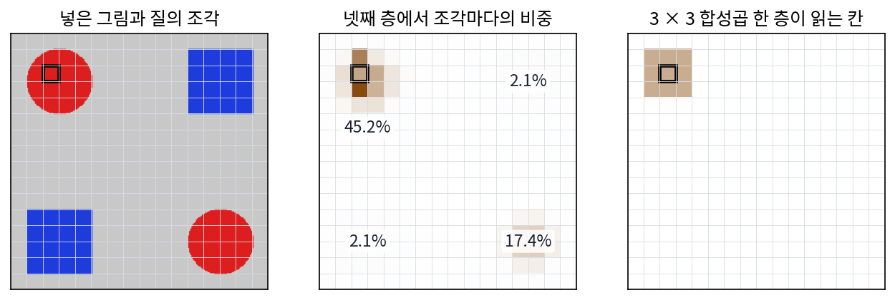

어텐션과 트랜스포머: 멀리 떨어진 칸끼리 읽기
이 장의 물음
잡음 예측 신경망은 잡음 섞인 그림을 받아 그림 전체를 보고 원래 그림을 짐작해야 한다. 합성곱으로 짠 U-Net 은 해상도를 낮춰 가며 멀리 보려 했지만, 출력 한 칸의 몫은 여전히 가까운 칸에 몰렸다. 3 × 3 합성곱은 「한 칸 왼쪽에는 이 무게, 두 칸 위에는 저 무게」처럼 자리마다 무게가 정해져 있어서, 64칸 떨어진 칸이 무엇을 담고 있든 그 칸의 몫은 층을 아주 많이 거쳐서야 조금 닿는다. 그래서 Stable Diffusion 1.x 의 U-Net 은 낮은 해상도 단계마다 멀리 떨어진 칸끼리 직접 읽는 부품을 끼웠고, 그 부품이 매개변수 8억 6,000만 개 가운데 31.1%를 차지했다. SDXL 에서는 86.0%로 늘었다. 무게가 점점 그 부품 쪽으로 옮겨 가는 것이다.
그 부품은 칸끼리 무엇을 주고받기에 거리와 상관없이 읽을 수 있을까? 이 장은 다음 물음에 차례로 답한다.
- 어느 칸을 얼마나 읽을지를 자리 대신 칸이 담은 내용으로 정하려면 어떻게 계산할까?
- 내용만 보고 읽으면, 어느 칸이 위에 있고 어느 낱말이 먼저 왔는지는 어떻게 알까?
- 한 칸이 서로 다른 것 여러 개를 동시에 읽어야 하면 어떻게 할까?
- 그런 층을 수십 개 쌓아도 학습이 무너지지 않게 하려면 무엇이 더 필요할까?
- 그림의 칸이 글 인코더가 넘긴 낱말들을 읽으려면 무엇을 바꿔야 할까?
- 글을 한 토큰씩 이어 쓰는 모델은 토큰 하나를 더 쓸 때마다 앞의 계산을 모두 다시 해야 할까?
셀프 어텐션: 칸마다 모든 칸을 내용으로 골라 읽는다
잡음이 짙은 얼굴 그림에서 왼쪽 눈 자리를 다듬는다고 해 보자. 그 자리가 눈이 맞는지 가장 잘 알려 주는 것은 바로 옆 칸보다 그림 반대편의 오른쪽 눈이다. 오른쪽 눈이 있으면 왼쪽 눈도 같은 높이에 같은 크기로 있어야 한다. 합성곱은 이 짝을 맞추지 못한다. 3 × 3 커널의 무게는 「바로 옆 칸」, 「한 칸 위」처럼 상대 자리에 붙어 있어서, 멀리 있는 칸이 눈이든 배경이든 같은 무게로 대하고, 그나마 그 칸까지 닿으려면 층을 많이 거쳐야 한다. 칸마다 「나와 짝이 될 만한 칸」을 거리와 상관없이 내용으로 골라 읽을 수는 없을까?
역사: 번역문을 쓸 때마다 원문을 다시 훑기
이 물음은 그림보다 번역에서 먼저 나왔다. 2014년 무렵의 신경망 번역기는 원문을 낱말 하나씩 차례로 읽으며 기억 벡터를 고쳐 쓰는 인코더와, 그 벡터 하나에서 번역문을 한 낱말씩 써 내는 디코더로 이뤄져 있었다. 원문이 아무리 길어도 디코더가 받는 것은 길이가 정해진 벡터 하나다. 같은 해 조경현(Kyunghyun Cho)과 동료들은 이런 번역기의 성능이 문장이 길어질수록 빠르게 떨어진다는 것을 보였다.
바다나우(Dzmitry Bahdanau), 조경현, 벤지오(Yoshua Bengio)는 「길이가 정해진 벡터가 병목」이라고 짐작하고 처방을 바꿨다. 원문을 벡터 하나로 줄이지 말고 낱말마다의 벡터를 모두 남겨 두고, 디코더가 번역 낱말을 하나 쓸 때마다 원문 낱말들을 다시 훑어 지금 쓸 낱말과 관련이 깊은 자리에 큰 비중을 두어 읽게 한 것이다. 논문은 이것을 원문의 관련 부분을 「(부드럽게) 찾는다」고 적었고, 학습된 비중이 사람이 보기에도 그럴듯한 낱말 짝을 이룬다고 보고했다.
3년 뒤 구글의 바스와니(Ashish Vaswani)와 동료들은 차례로 읽는 부분까지 걷어 냈다. 원문 낱말들끼리도, 번역문 낱말들끼리도 서로를 이 방식으로 읽게 하고, 그것만으로 번역기를 짰다. 논문 제목이 「필요한 것은 어텐션뿐이다(Attention Is All You Need)」다. 이 장의 계산은 그 논문의 꼴을 따른다.
한 줄 그림에서 짝 찾기
가장 작은 예로 보자. 칸이 6개인 한 줄 그림이 있고, 칸마다 수 2개(빨강 정도, 파랑 정도)를 담는다. 0번 칸과 5번 칸은 빨강 (2, 0), 2번 칸은 파랑 (0, 2), 나머지는 회색 바탕 (0, 0)이다. 0번 칸이 「나와 같은 것」을 찾아 읽는다고 하자.
- 0번 칸의 벡터와 모든 칸의 벡터를 내적해 점수를 매기고, 수의 개수 2의 제곱근으로 나눈다. 빨간 칸 둘은 4/√2 = 2.828, 나머지는 0이다.
- 점수를 소프트맥스로 비중으로 바꾼다. 빨간 칸 둘이 0.4471씩, 나머지 넷이 0.0264씩이고 합은 1이다.
- 비중대로 모든 칸의 벡터를 섞는다. 0번 칸이 받는 것은 (1.789, 0.053)이다.
0번 칸은 다섯 칸 떨어진 5번 칸을 바로 옆 1번 칸보다 열일곱 배 무겁게 읽었다. 두 칸이 같은 것을 담았기 때문이다. 이웃 평균 [¼, ½, ¼]이었다면 0번 칸은 자기와 1번 칸만 읽어 (1.0, 0)을 받았고, 5번 칸은 아예 보지 못했다.
실제 신경망에서는 칸의 벡터를 그대로 내적하지 않는다. 칸마다 학습하는 행렬 셋으로 벡터를 세 가지로 바꾼다. 「나는 무엇을 찾나」를 담은 질의(query), 「나는 무엇인가」를 담은 열쇠(key), 「나를 읽으면 건네줄 내용」인 값(value)이다. 질의와 열쇠의 내적으로 비중을 정하고, 그 비중으로 값을 섞는다.
비중 aij를 정하는 데 i와 j가 몇 칸 떨어졌는지는 들어가지 않는다. 들어가는 것은 질의와 열쇠, 곧 두 칸이 담은 내용뿐이다. 이처럼 한 줄 안의 토큰들이 질의·열쇠·값으로 서로를 골라 읽는 계산을 셀프 어텐션 (한 줄 안에서 서로 골라 읽기 / self-attention)이라 한다. 어텐션(attention)은 「주의를 기울임」이라는 뜻이고, 「셀프」는 질의를 내는 쪽과 읽히는 쪽이 같은 줄이라는 뜻이다. 여기서 토큰은 어텐션이 다루는 벡터 하나하나를 부르는 말이다. 글이면 낱말 조각마다 하나이고(낱말 조각을 벡터로 바꾸는 표를 토큰 임베딩이라 한다), 그림이면 칸마다 하나다. 점수를 dk의 제곱근으로 나누는 까닭은 아래 문제에서 따져 본다.
실제로 학습된 신경망에서도 이렇게 읽을까? 글과 그림을 함께 배운 CLIP 모델의 그림 인코더(트랜스포머 24층)는 그림을 14 × 14픽셀 조각 256개(16 × 16)로 잘라 조각마다 토큰 하나로 읽는다. 회색 바탕에 빨간 원 둘과 파란 네모 둘을 그린 그림을 넣고, 왼쪽 위 빨간 원 한가운데 조각이 넷째 층에서 다른 조각마다 주는 비중을 머리 16개(머리는 뒤에서 다룬다)로 평균 냈다.

질의 조각은 대각선 반대편의 빨간 원에 17.4%를 주었다. 그 원과 같은 크기, 비슷한 거리에 있는 파란 네모에는 2.1%씩이다. 같은 거리의 회색 바탕 16조각에는 다 합쳐 0.7%만 갔다. 조각 하나로 치면 먼 빨간 원의 조각이 같은 거리의 회색 조각보다 스물다섯 배쯤 무겁게 읽혔다. 거리가 아니라 내용이 비중을 정한 것이다.
ML에서: 4096칸이 서로를 읽는 U-Net 의 어텐션 블록
Stable Diffusion 1.x 의 U-Net 은 가장 고운 단계에서 64 × 64칸, 칸마다 수 320개인 특징 지도를 다룬다. 어텐션 블록은 이 특징 지도를 칸 4096개의 토큰 줄로 펴서 셀프 어텐션을 건다. 칸마다 4096칸 모두에 비중을 매기므로, 한 번에 매기는 점수가 4096 × 4096 = 16,777,216개다. 32 × 32 단계에서는 칸 1024개라 1,048,576개, 16 × 16 단계에서는 65,536개다. 합성곱 한 층은 칸마다 9칸만 읽지만, 어텐션 블록 하나는 칸마다 모든 칸을 읽는다. 대신 칸 수가 두 배가 되면 점수 수는 네 배가 된다.
문제 1. 단톡방에서 맛집 찾기
친구가 단톡방에 「지난번 그 파스타집 얼마였지?」라고 물었다. 지난 메시지 넷이 질문과 얼마나 관련 있는지를 점수로 매기면 3, 1, 0, 0이고, 메시지에 적힌 1인당 가격은 차례로 12,000원, 8,000원, 30,000원, 5,000원이다. (가) 점수에 소프트맥스를 씌운 비중은? (나) 그 비중으로 가격을 섞으면 얼마인가? (다) 점수를 모두 세 배로 키우면 비중과 섞은 가격은 어떻게 되는가? (풀어 본 뒤 위젯 1의 「문제 1 불러오기」로 확인해 보자.)

점수가 3인 메시지가 정답이니까 그냥 12,000원 아니에요? 섞을 필요가 있나요?

점수 3과 1은 얼마나 다른 거죠? 소프트맥스를 씌워서 숫자로 봐요.

e³, e¹, e⁰, e⁰을 합으로 나누면 0.81, 0.11, 0.04, 0.04예요. 정답 메시지가 81%고 나머지도 조금씩 섞여요. 섞은 가격은 12,005원이에요.

12,000원에서 5원밖에 안 벗어났네. 8,000원짜리가 11% 섞여서 내려간 만큼 30,000원짜리가 4% 섞여서 올라갔어.

(다)는요?

점수가 9, 3, 0, 0이 되니까 0.9973, 0.0025, 0.0001, 0.0001이야. 섞은 가격은 11,991원. 점수를 키우면 거의 한 메시지만 고르는 거네. 점수의 차이가 같아도 배율이 비중의 쏠림을 정해.

조교님한테 「그 과제 마감 언제였죠?」 물으면 공지 메시지를 주로 보고, 잡담방 말도 조금 참고하는 거랑 같네요. 확신이 클수록 공지만 보고요.
문제 2. 점수를 √d_k 로 나누는 까닭
질의와 열쇠의 성분이 모두 서로 독립이고 평균 0, 분산 1이라고 하자. (가) 길이 dk인 질의와 열쇠의 내적은 분산이 얼마인가? dk = 4와 64에서 표준편차는? (나) dk = 64에서 열쇠 셋의 점수가 표준편차 하나씩 떨어진 8, 0, −8이면 소프트맥스 비중은? 맨 앞 비중을 그 점수로 미분한 값 p(1 − p)는? (다) 점수를 √64 = 8로 나누면 어떻게 되는가? (라) 「성분이 서로 독립」이라는 조건이 깨지면 이 나눗셈은 여전히 맞는가? ((나)(다)는 위젯 1의 「문제 2 불러오기」에서 배율을 바꿔 확인할 수 있다.)
(가)는 성분 곱 qiki가 평균 0, 분산 1이고 서로 독립이니까 분산이 더해져서 dk야. 표준편차는 √dk, 4면 2, 64면 8. 무작위로 20만 쌍을 뽑아 보니 1.999, 7.988이 나와.
(나)는 e⁸이 2981이니까 맨 앞이 0.99966, 둘째가 0.00034, 셋째는 거의 0이에요. 확실하게 골라서 좋은 거 아니에요?
학습하는 동안 이 비중을 고치려면 기울기가 필요하죠. p(1 − p)가 얼마예요?

0.000335요. 어… 거의 0이네요. 처음엔 질의와 열쇠가 아직 엉터리일 텐데, 엉터리로 고른 쪽을 이미 99.97% 믿어 버려서 고칠 신호가 안 와요.

(다)는 점수가 1, 0, −1이 되니까 비중 0.665, 0.245, 0.090이고 p(1 − p)는 0.223이야. 신호가 660배 넘게 커. 나누는 수 √dk는 길이가 몇이든 점수의 표준편차를 1로 맞추는 수였어.
바스와니와 동료들도 논문에 같은 계산을 각주로 달았어요. dk가 크면 내적이 커져 소프트맥스가 기울기가 아주 작은 곳으로 밀려난다고 짐작했다고요. 그럼 (라)는요?

질의와 열쇠가 같은 방향으로 맞춰져 있으면 내적은 성분 64개가 다 같은 쪽으로 더해져서 64까지 가. 그때는 8로 나눠도 8이라 다시 쏠려. 이 나눗셈은 처음에, 무작위에 가까운 상태에서 점수 크기를 맞추는 것이지 학습이 끝난 뒤의 쏠림까지 막아 주지는 않아.

그래요. 학습이 끝나면 쏠림은 신경망이 필요해서 만든 것이니 막을 까닭도 없어요. 시험 문제가 너무 어려워 모두 0점이면 채점해도 배울 게 없으니, 처음에는 난이도를 맞춰 주는 거예요.

첫 과제부터 만점 아니면 0점으로만 채점하면 뭘 고쳐야 할지 모르는 거랑 같네요. 부분 점수가 있어야 고칠 데가 보이죠.
문제 3. 점수 표는 얼마나 큰가
Stable Diffusion 1.x 는 그림을 가로세로 8배 줄인 잠재 그림 위에서 일하고, 가장 고운 단계의 셀프 어텐션은 머리 8개마다 칸 × 칸 점수 표를 만든다. 점수 하나는 2바이트(fp16)다. (가) 512 × 512 그림이면 칸은 몇 개이고 점수 표는 몇 MiB인가? (나) 같은 모델로 1024 × 1024 그림을 만들면? (다) ComfyUI 의
attention_split은 메모리가 모자라면 질의를 몇 묶음으로 잘라 차례로 계산한다. 이렇게 잘라도 답이 같은 까닭은?
(가)는 512 ÷ 8 = 64라서 64 × 64 = 4096칸이고, 4096 × 4096 × 8 × 2바이트 = 268,435,456바이트, 256 MiB예요.
그럼 1024는 두 배니까 512 MiB?
아니에요. 가로세로가 두 배면 칸이 네 배, 16,384칸이고 점수 표는 칸 수의 제곱이라 열여섯 배예요. 4096 MiB, 4기가가 블록 하나에서 나와요.
768 × 768만 해도 9216칸이라 1296 MiB야. 그림을 조금 키웠을 뿐인데 메모리가 제곱으로 늘어.
(다)는요? 소프트맥스는 무엇끼리 나누는 계산이었죠?
한 질의의 점수들, 곧 표의 한 줄 안에서만 합으로 나눠요. 다른 줄과는 섞이지 않으니까, 줄 묶음마다 따로 계산해서 이어 붙여도 같은 답이에요. 칸 하나가 받아 가는 것은 자기 줄만 있으면 되니까요.
전교생 성적표를 한 번에 못 뽑으면 반별로 뽑아서 철하는 거네요. 학생 하나의 석차가 반 안에서만 매겨진다면요.